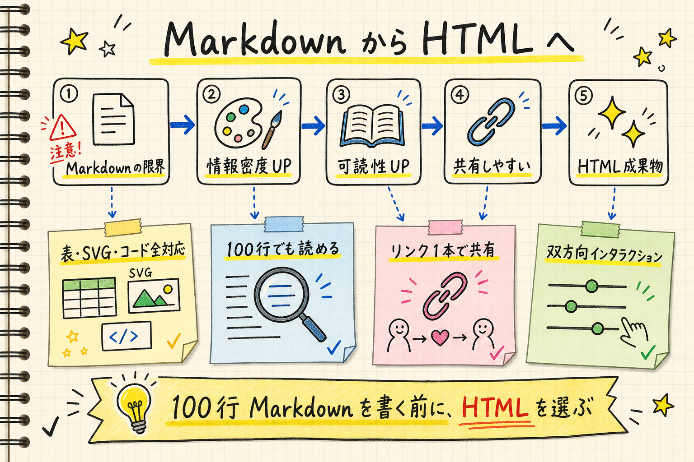

Anthropic 公式チームが語る、HTML 出力という新常識
Claude が出力するファイル形式といえば Markdown が定番だった。けれど Anthropic の Claude Code チームメンバー本人が「もう Markdown はやめて HTML に切り替えている」と書いた記事が公開された。スペック・計画・レポート・コードレビュー、すべてを HTML 1枚で作る運用を勧めている。
理由はシンプル。「Markdown だと100行超えると誰も読まない」。HTML なら表・SVG・コードブロック・インタラクションを全部1ページに詰め込める。リンク1本で共有できて、スマホでも読める。スクール生にとっても、納品物・仕様書を「読まれる形」で渡すのは大きな差別化になる。

5つのポイント
なぜ Markdown では足りないか
仕様書を100行書いても、自分以外は誰も読まない。Claude が書いてくれた100行を「読み切る」のはほぼ無理だ。Markdown はメモには良いが、共有・レビュー・意思決定には情報密度が足りない。
HTML が解放するもの
表・SVG 図解・コードブロック・スライダー・タブまで全部1ページに収まる。色・スタイル・レスポンシブも自在。「リッチな成果物」を Claude に作らせる素材として、HTML は今の最適解。
使いどころは多い
仕様書・実装計画、PR のコードレビュー解説、技術調査レポート、デザインプロト、30件のチケット並べ替え UI まで。「使い捨ての専用ツールを HTML 1枚で作る」という発想が日々の作業を変える。
著者からの警告
記事末尾に重要な一文がある。「これを /html スキルに変換しないでほしい」。Claude にプロンプトで都度頼むのが本来の姿で、ガチガチに自動化してしまうと使い分けの感覚が育たないと釘を刺している。
ぱるぷんてとしての応用
今後 #ai新着情報 への投稿は、本文サマリ + HTML リンクの形にしていく予定。詳細・図解・スマホ対応はすべて HTML 側に任せる。スクール上級コースの教材も、スライドではなく HTML 1枚で配る方向で動く。
100行 Markdown を書きそうになった瞬間が、HTML に切り替える合図。
読まれない仕様書はもう作らない、というスタート。